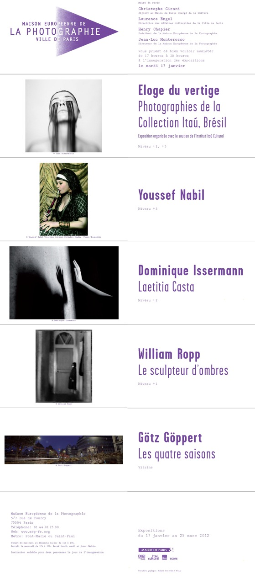

No começo de janeiro Guilherme Maranhão [5]enviou um convite sobre a exposição que iria participar "O Elogio da Vertigem: Coleção Itaú de Fotografia Brasileira", que (então) aconteceria na Maison Européenne de la Photographie, entre os dia 17 de janeiro de 2012, em Paris.

O email-convite evoluiu para um dialógo entre eu, ele e Felipe Fonseca. Um dialógo que faz refletir não apenas sobre imagens-vertigens, mas sobre as vertigens-do-tempo:
Felipe: se eu for, tem reembolso de vale transporte? ;) parabéns!!
Maira: não tinha pensado nisso...
Guilherme Maranhão: Sua resposta veio a calhar, estava pensando em vocês dois. Na verdade estava pensando no que é envelhecer e isso me fez pensar em vocês, explico porque. O meu Felipe vai fazer dois meses depois de amanhã. Minhas olheiras estão assustadoras. E provavelmente quem me vê na rua, deve achar que eu sou alguém muito triste e deprimido. Estou cansado e talvez só o Felipe, o Pedro e a Dani saibam o quão feliz também. No meio disso tudo, tenho tido muito tempo para pensar. Comecei a pensar nas coisas que me fazem sentir velho, tipo entrar no quartos dos meninos e ver um neném e um quase pré-adolescente dormindo, às 2 da manhã. Putz! Tenho dois filhos, quase um susto ao formular a frase. E tem a barba ficando bem grisalha também.
Mas enfim, onde quero chegar? Preciso confessar, me sinto velho quando tento ler o MutGamb e a MetaReciclagem. Acho até que o texto que há no abre do metareciclagem.org hoje em dia é muito mais sedutor do que havia no passado, dá até vontade de enveredar por ali, mas eu confesso que não entendo muito. Há um dialeto que eu não conheço, sei lá. Talvez sejam só as gírias por mim desconhecidas...